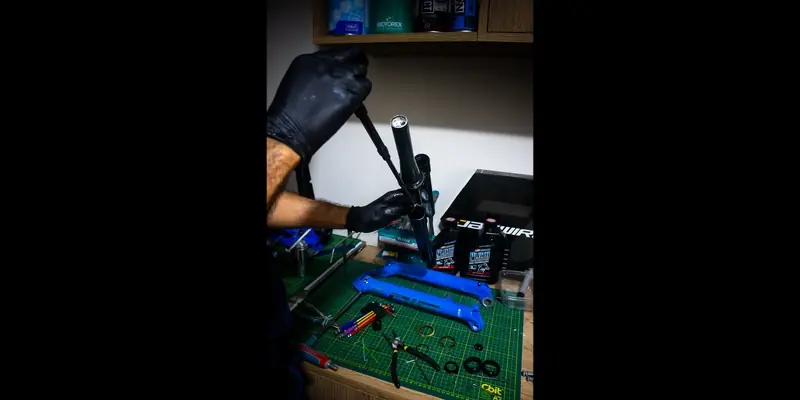

[ PROTOCOL 9.81 — DYNAMIC RESPONSE ]En BikeLab Studio realizamos mantenimiento técnico de suspensión para MTB bajo protocolo de control dinámico, sellado interno y calibración precisa de amortiguación.
Una suspensión no es sensación.
Es dinámica aplicada.
m ẍ + c ẋ + kx = F(t)
m = masa
c = coeficiente de amortiguamiento
k = constante del resorte
Controlar el amortiguamiento (c) define estabilidad, tracción y recuperación bajo carga real.
Con el uso, el aceite pierde viscosidad, los retenes generan fricción adicional y el sistema se aleja de su comportamiento óptimo.
Cuando el amortiguamiento se degrada:
Nuestro protocolo incluye:
No es limpieza externa.
Es restauración del comportamiento dinámico.
Buscamos aproximarnos a un sistema dinámicamente estable bajo condiciones reales de uso.
Una suspensión correctamente mantenida:
Si buscas mantenimiento de suspensión en Trujillo o servicio técnico profesional de horquillas y shocks MTB, aplicamos protocolo completo bajo control dinámico y medición precisa.
Si estás fuera de Trujillo puedes enviarnos tu suspensión.
El estándar se mantiene. The standard holds.
Calle Paraguay 300 – Urb. El Recreo – Trujillo
Industrial, Scientific & Aesthetic Noir
AGENDAR CITA - SUSPENSIÓN